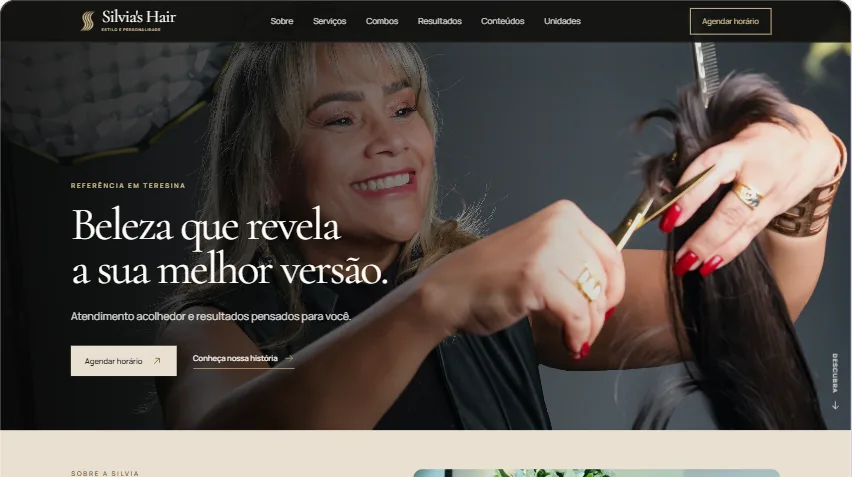

Silvia’s Hair
Site institucional para apresentar o salão, seus serviços e facilitar o caminho até o agendamento.
Visitar site ↗Eu crio sites personalizados, com identidade visual, estratégia e cuidado em cada detalhe.
Alguns projetos que mostram como eu transformo ideias em experiências digitais com identidade.

Site institucional para apresentar o salão, seus serviços e facilitar o caminho até o agendamento.
Visitar site ↗Site institucional para cabeleireiro e colorista, com foco em serviços, resultados e agendamento.
Visitar site ↗Uma direção mais sóbria para transmitir organização, confiança e proximidade.
Estudo visual ↗Um site bem pensado organiza sua presença, ajuda quem chega a entender o seu negócio e deixa o próximo passo mais claro.
Seu negócio ganha um espaço próprio, organizado e coerente com a imagem que você quer transmitir.
Serviços, informações e caminhos de contato ficam fáceis de encontrar e entender.
Eu cuido da direção visual, adaptação para diferentes telas, desenvolvimento e ajustes finais.
Você não precisa chegar com tudo decidido. Eu organizo o caminho com você.
Conversamos sobre o que você faz e o que o site precisa comunicar.
Eu organizo estrutura e visual até a ideia ganhar forma.
Eu construo a página e refinamos os detalhes juntos.
Você me conta o que tem em mente. Eu cuido de transformar isso em uma página que faça sentido para o seu negócio.
Você fala diretamente comigo do início ao fim.